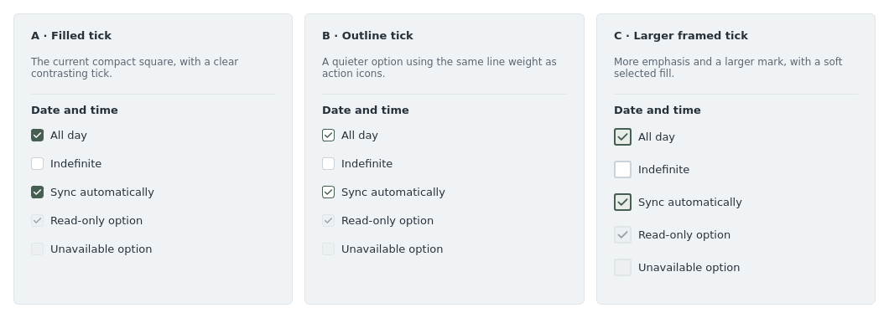

Three alternatives to the current filled square. Every selected option has a visible tick, so selection does not depend on color alone. The images below are rendered using the app’s actual Qt controls and theme.
These are comparison mockups; the app’s checkbox style is unchanged.

A · Filled tick Recommended
Keeps the existing compact shape and adds a contrasting tick. It is the smallest visual change and remains clear in dense forms.
B · Outline tick
Uses an outlined box and an accent-colored tick. It resembles the app’s action icons and introduces less filled color.
C · Larger framed tick
A larger tick, stronger border, and soft fill make checked states more prominent. It requires a little more room beside compact fields.
Whichever option is chosen would be shared by event creation, imports, calendar setup, and preferences, including their disabled states.